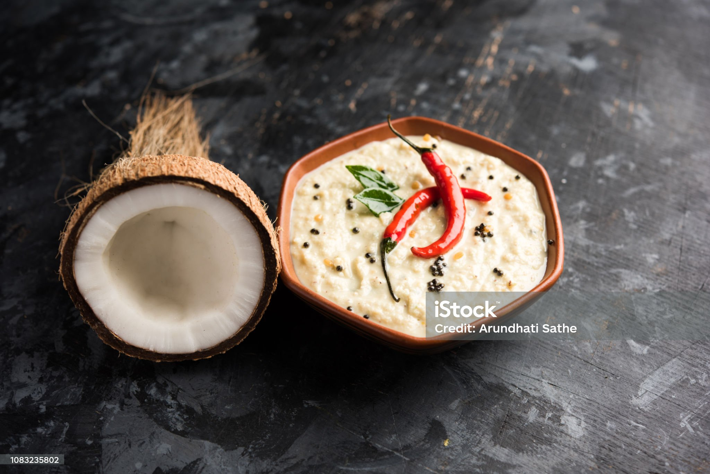

Coconut Chutney, Dosa's best friend

Description
Chutneys are a class of condiments that originated in India and can be made from a multitude of different ingredients. Just on this site, I have recipes for tomato, coriander, peanut, tamarind and onion chutneys, and that isn’t even my full list! All of these delicious savory sauces and relishes are used to enhance the flavors of various meals.Coconut chutney originated from the South Indian cuisine. It is most often served with breakfast or snack dishes. In its simplest form, it is made by finely grinding fresh white coconut meat with either green chilies or dry red chilies and salt added to it.
Ingredients
- Coconut
- Chopped green chillies
- Chopped ginger
- Roasted Chana Dal
- Salt
- Water
- Sesame oil
- Mustard seeds
- Urad dal
- Cumin Seeds
- Dry red chilli
- Curry leaves
- Asafoetida
Steps
-
Add ½ cup tightly packed freshly grated coconut in a chutney grinder jar or a small grinder jar.
-
Add 1 to 2 chopped green chillies (depending on your heat preference), ½ inch chopped ginger (optional, can substitute with 2 small cloves of garlic) and 2 tablespoons roasted chana dal.
-
Add salt to taste. I suggest starting with less salt at first. Then, after grinding, check the taste and add some more salt if required.
-
Add 3 to 4 tablespoons water. You can make this coconut chutney thicker by adding less water. You can skip roasted chana dal if you do not have it.
-
Grind to a smooth consistency. If the blade is unable to grind or the chutney looks thick, then you can add 1 to 2 tablespoons more water or as needed.
-
Remove the chutney with a spoon or spatula in a heat proof bowl (e.g. steel, pyrex or glass). Check the taste and add more salt if needed.
-
In a small pan or a tadka pan, heat ½ tablespoon sesame oil (gingelly oil – made from raw sesame seeds) over low heat.
-
Add ½ teaspoon mustard seeds and let them begin to crackle.
-
Once the mustard seeds begin to crackle, add ½ teaspoon urad dal (split and husked black gram).
-
Next add ½ teaspoon cumin seeds. You can skip cumin seeds if you prefer.
-
Stir often and fry keeping the flame to a low.
-
The urad dal should start becoming golden. The cumin seeds will also crackle and get browned.
-
Once the urad dal begins to turn to a golden color, then add 1 dry red chilli (broken and seeds removed), 9 to 10 curry leaves and a pinch of asafoetida (hing). If the pan becomes very hot, then switch off the flame after adding the red chili, curry leaves and asafoetida.
-
Stir and fry for a couple of seconds till the curry leaves become crisp and the red chilli changes color.
-
Switch off the flame and immediately pour the entire tempering together with the oil on the ground coconut chutney in the bowl.
-
Mix very well.
-
Serve coconut chutney with idli, dosa, vada, pongal or pakoda of your choice.